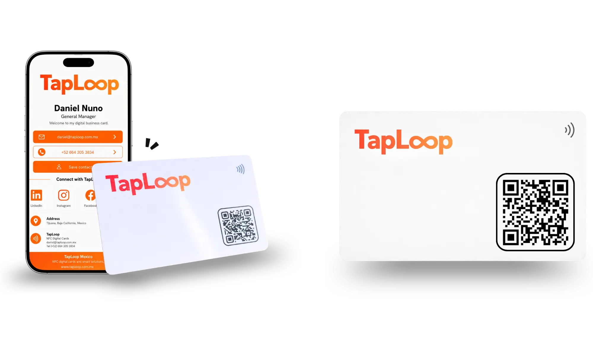
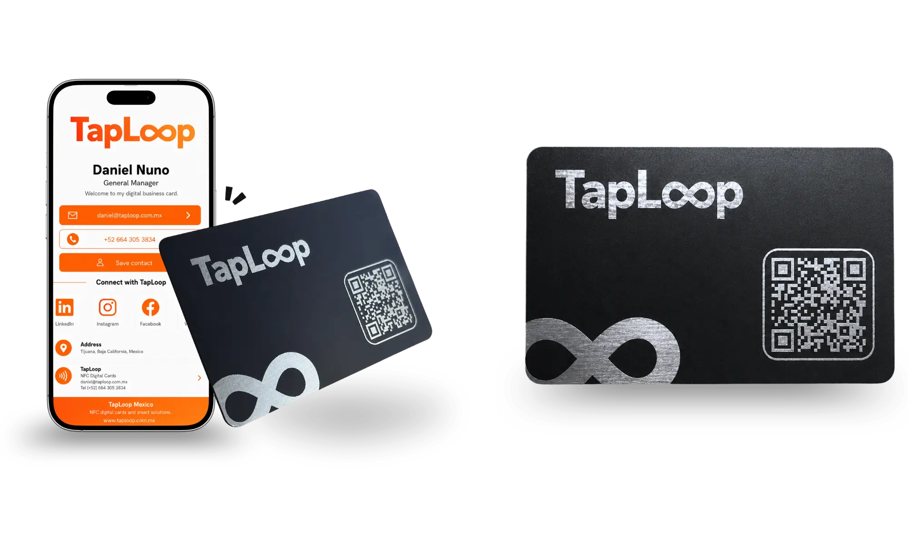
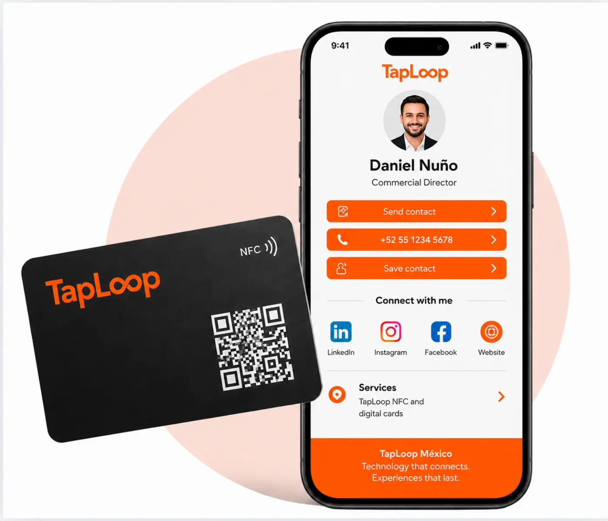

PVC Digital NFC Card
Durable, lightweight, fully branded, and practical for professionals, sales teams, events, and company rollouts.
View PVC CardRequest a QuoteTapLoop card catalog
Both TapLoop card options open a digital profile through NFC or QR code. Choose PVC for daily use, metal for a premium first impression, or combine both for your team.

Durable, lightweight, fully branded, and practical for professionals, sales teams, events, and company rollouts.
View PVC CardRequest a Quote
A premium, substantial card for executives, consultants, founders, partners, and high-value networking.
View Metal CardRequest a QuoteDigital NFC Business Card
An NFC card is a smart physical card that opens your digital profile when another person holds their phone near it or scans the QR code. No app installation is required, and it can be used as many times as you need.
The recipient holds a compatible phone near the NFC chip embedded in the card.
The browser displays your NFC digital profile with contact details, WhatsApp, social media, and links.
The person can save your contact, call you, message you, or visit your links instantly.
Choose Your NFC Card
Both options include custom branding, a digital profile, a programmed NFC chip, and a QR code. Choose the format that best represents your work, position, or team.
A lightweight, durable, and customizable card for sharing your digital profile, contact information, WhatsApp, social media, catalog, location, and business links in seconds.

An elegant, high-impact metal card for executives, partners, personal brands, and professionals who want to project a premium image at every meeting.

NFC Card Comparison
Your choice depends on the image you want to project, the number of team members, and the context in which you will share your digital profile.
Practical, versatile, and efficient for professionals, sales, customer service, events, agencies, and commercial teams.
More exclusive and robust, ideal for executives, partners, premium brands, and high-value contacts.
Both open a digital profile with contact details, WhatsApp, social media, website, location, documents, and catalog.
What a TapLoop NFC Card Includes
We take care of the design, programming, and testing so your digital NFC business card arrives configured and ready to use.
We adapt the card and digital profile to your logo, colors, visual identity, and information.
Bring together your name, position, phone, WhatsApp, email, social media, website, and links.
Your card arrives configured to open your digital profile near a compatible phone.
The QR code opens the same digital profile and works as a universal access alternative.
We verify the NFC, QR code, buttons, and links before delivery.
We support you from the design proposal through production and final delivery.

NFC Cards for Companies
We create a corporate visual system and customize each card and digital profile with every team member's information.
Each person shares their name, position, phone, WhatsApp, email, and links.
Every card maintains the company's design, colors, and style.
We program and test every card before shipping it to your team.

Answers about TapLoop NFC cards, digital profiles, and team solutions.
It is a physical card with an NFC chip and QR code that opens a digital profile with contact details, WhatsApp, social media, website, and links.
No. The digital profile opens in the phone browser through NFC or QR code.
Yes. The card and profile can be customized with your logo, colors, name, role, QR code, and key links.
Yes. We can create a consistent visual system and one digital profile for each employee.
Ready to start?
Tell us how many cards you need, which card type you prefer, and what your digital profile should include.